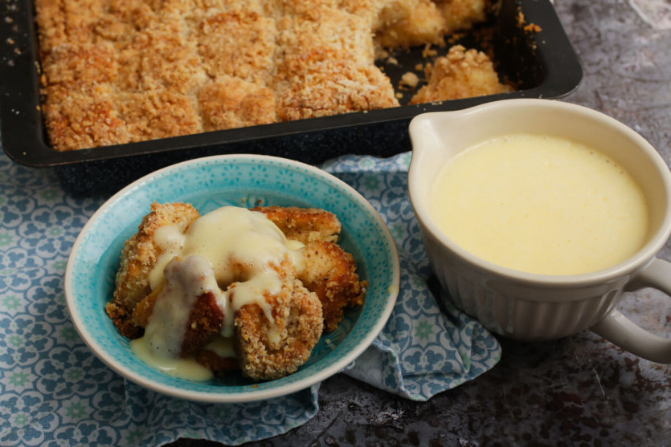

Go back to the home page
Golden dumpling with English cream

Ingredients for the golden dumpling
- 560 g Fine flour
- 250 ml + 200-300 ml for soaking Milk, 3.6%
- 125 g Butter, plus for greasing
- 60 g granulated sugar
- 15 g Yeast, fresh
- 2 egg yolks
- 1 Egg
- Grated peel of ½ organic lemon
- Scraped out seeds of 1 vanilla pod
- 2 teaspoons Salt
- 200-300 g Walnuts (ground)
- 5-6 tablespoons powdered sugar
Ingredients for the English cream
- 100 ml milk, 3.6%
- 100 ml Cream
- 2 egg yolks
- ½ Vanilla pod
- 5 g Fine flour
- 20 g granulated sugar
- 10 g Butter
- 1 pinch of salt
Baking instruction for the golden dumpling
- Just warm the milk (to 38-40 °C) while adding it
sugar and yeast. Take it off the heat, stir in the crumbled yeast, then add the melted butter, the grated lemon
peel, the scraped vanilla seeds, the two egg yolks and the whole egg.
- Sift the flour into a kneading machine, then start the machine with the hook mixer. Meanwhile, add the
egg-milk mixture. Let the yeast work with the flour a little, salt is only added in the last step. Knead the
dough thoroughly in the machine, when it is smooth and separates from the wall of the container, cover it
with foil and let it rise until doubled.
- While the dough is rising, mix the powdered sugar with the ground walnuts in a bowl. Grease a medium-sized
porcelain baking dish with a little hand-warm butter and sprinkle with a few spoonfuls of the nut mixture so
that it sticks to the side of the dish.
- Cover the dough, which has risen in the meantime, on a lightly floured surface and bake for approx. Cut 20 g
dumplings from it. Thoroughly knead the dumplings (knead and knead them with the palm of your hand), then
put them in a bowl full of milk and let them soak for a few seconds.
- The dough balls soaked in milk are then rolled in the nut-sugar mixture, then the approx. Arrange them in a
38 x 26 bowl, going row by row. The bowl should be full, but don't put another row of dough on it, and you
shouldn't put the dumplings very close together, because they will rise a bit and grow. If there are a few
walnuts left, sprinkle them between the dough balls.
- Cover the bowl and let the dough rise until almost double. When it has risen nicely, bake it in a preheated
oven at 170-180 °C until it becomes a nice golden brown, approx. In 30-35 minutes.
Baking instruction for the English cream
- Heat the milk with the cream, the split vanilla pod and a pinch of salt. Mix the flour with the butter in a
small bowl and add it to the milk mixture - let it all melt and become homogeneous. Meanwhile, beat the egg
yolks with the sugar until white. While stirring continuously, slowly pour our warm milk mixture into the
egg mixture.
- Boil water in a saucepan and over its steam, while stirring continuously, thicken the English cream to 85-86
°C. When it has reached the desired consistency, immediately filter it into another container so that it
does not continue to cook in the heat of the pot held over the steam
How to serve:
When cooked, separate the dumplings just add the English cream.
If you want to read it in Hungarian, click here/Ha el szeretnéd olvasni magyarul is, kattints ide
If you like this food, maybe you are interested in doughnut holes or emperor's crumbs. If you want to check it, just click on the name